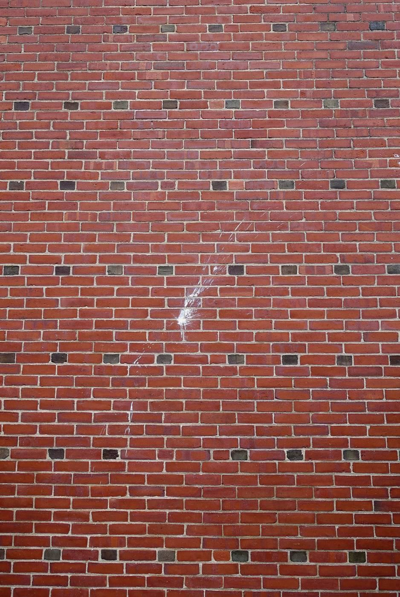

天板
箱のいちばん上をふさぐ平らな板。ふちが少し張り出していて、上に物を置くこともできる。
店のこと
確認できているのは、所在地とInstagramのみです。
確認できたこと
お店の名前、所在地、Instagramの三つです。営業時間・定休日・メニュー・価格・ご予約・駐車場・電話は準備中です。
お店の考えや由来は、ここには書いていません。正式な内容は、お店からご提供いただいたものに差し替えます。
図の部位
制作側の連想で、お店の理念・由来とは無関係です。
箱のいちばん上をふさぐ平らな板。ふちが少し張り出していて、上に物を置くこともできる。
本体の上のほうに横一列に並ぶ、細いすき間。箱の中の空気を少しずつ入れ替える。
四方を囲む箱の胴。中の広さと形を決める、いちばん大きな部分。
下の縁を軸にして手前へ倒れる、正面の扉。倒すと中のものに手が届く。
扉の上の縁についた、指でつまむ小さな取っ手。ここを引いて扉を開ける。
箱の底の左右につく低い脚。底を床や台からわずかに浮かせる。
写真(イメージ)



写真はイメージです。お店のものではありません。